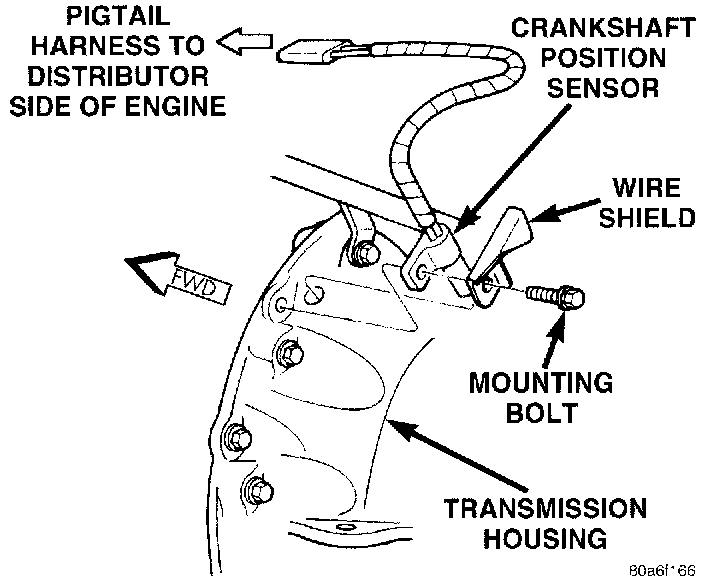

Crankshaft Position Sensor
CRANKSHAFT POSITION SENSOR-4.0L ENGINE-PCM INPUTThis sensor is a hall effect device that detects notches in the flywheel (manual transmission) or flexplate (automatic transmission).
This sensor is used to indicate to the Powertrain Control Module (PCM) that a spark and or fuel injection event is to be required. The output from this sensor, in conjunction with the camshaft position sensor signal, is used to differentiate between fuel injection and spark events. It is also used to synchronize the fuel injectors with their respective cylinders.
N@cr9707147_14-031aN@cr9707147_14-031b- FUEL SYSTEM 14 - 31Fig. 3 Camshaft Position Sensor-Typical (5.2U5.9LDistributor Shown)Fig. 4 Crankshaft Position Sensor-5.2LI5.9LEnginesfig. 5 CKP Sensor - Typical:

The sensor is bolted to the transmission bellhousing.
The engine will not operate if the PCM does not receive a crankshaft position sensor input.